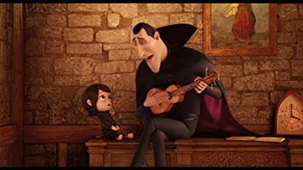

There are quite a few common attributes in the appearance of the version of the vampire that has made it into today’s world. For example, vampires are usually seen wearing dark colours, such as black, and they oftentimes have capes as well. Additionally, they are known to have sharp fangs, which aid them in the act of drinking blood that has become attributed to vampires throughout the ages.
Some of the stereotypical characteristics of vampires as we know them today are that they suck blood, they can’t see themselves in mirrors, they can be warded off with garlic, and they burn in the sun. There are some characteristics that are unique to certain media forms, such as them having super speed, but most of the stereotypical traits are just the depictions that people in the past had for phenomenons that they could not explain at the time, but can now be explained with science.
The version of the vampire that we know today largely stemmed from eighteenth century Europe, where many beliefs were held regarding the relation vampires had with the dead. Many of these beliefs stemmed from an incomplete understanding of what happens to a corpse after death. When a dead body is left for a certain amount of time, its skin starts to shrink, and in turn the hair and nails appear to have grown. This was likely the reason why people thought that the corpse was still “alive”, in a way. This, combined with the fact that the breaking down of internal organs can lead to a dark liquid leaking out of the nose and the mouth of the corpse, may have made people think that these corpses were the “undead”, or people coming back to life to feed on the blood of other creatures, when in truth this was not blood at all.
One of the most popular depictions of vampires is in the “Twilight” series by Stephanie Meyer. In this adaptation, vampires are portrayed as having largely the same characteristics as the general vampire, with the only big difference being that they shone in the sun rather than burning, and that they have certain superpowers, like super speed. This shows just how big of a mark vampires have had on media, as despite all the science proving that vampires are not real, people find it enjoyable to imagine a world where they are real. A second popular depiction of vampires is in the “Hotel Transylvania” series. This franchise depicts vampires as similar to humans, and the main character, a “teenage” vampire, goes through largely the same problems most teenagers go through in the human world. This makes the characters relatable, as well as helps people lose their fear of vampires, which works as a strong combatant to the fear that people used to have of vampires in the past, when they were seen as a real threat.
The vampires, Mavis and Dracula, in Hotel Transylvania, portrayed as “normal” people in the movie.
Return to the top of the page
Browse the list of mythical creatures.